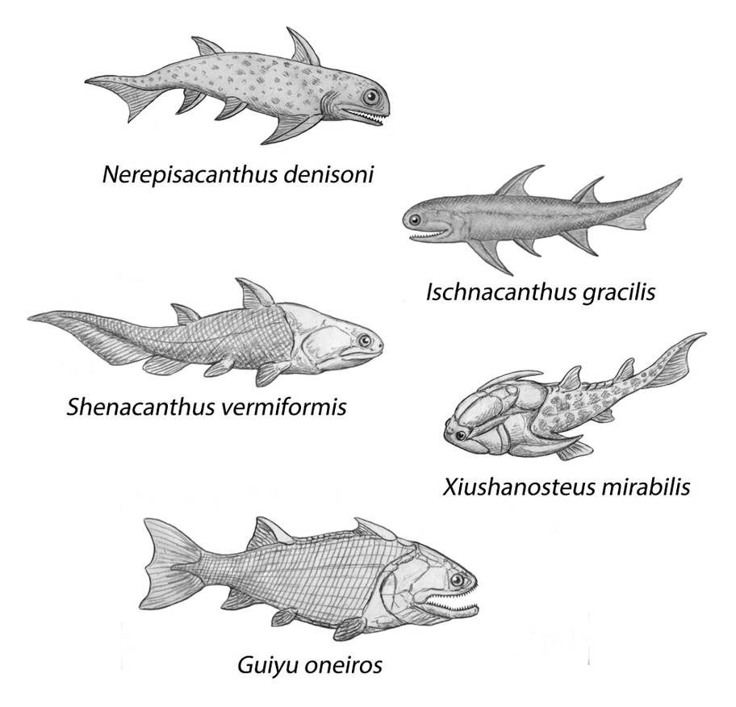

Silüryen, Paleozoyik Zaman'ın en kısa süren ancak yerküre tarihinde yaşamın karaya kalıcı olarak yerleştiği en önemli jeolojik dönemlerden biridir. İsmini Galler'deki Silures kabilesinden alan bu evre, Ordovisyen sonunda deniz canlılarının yaklaşık %60'ının yok olduğu büyük bir kitlesel yok oluşun hemen ardından başlar.
Karasal Yaşamın Doğuşu ve Denizel Gelişim
• Karasal Adaptasyon: Damarlı bitkiler bu dönemde evrimleşmiş; örümceğimsiler, çok bacaklılar ve altı bacaklılar karasal yaşama tamamen adapte olmuştur.
• Balıkların Evrimi: Çeneli ve kemikli balıkların ilk kez ortaya çıkarak çeşitlenmesi, bu dönemin en dikkat çekici biyolojik gelişmelerinden biridir.
• İklim ve Coğrafya: Süper kıta Gondvana güneye doğru hareket ederken, yüksek deniz seviyeleri birçok ada topluluğu ve çeşitli ekosistemlerin oluşmasına zemin hazırlamıştır.
• Jeolojik Yapı: Deniz seviyesindeki yükselme sonucunda Silüryen tortulları, erozyona uğramış Ordovisyen tabakaları üzerinde bir uyumsuzluk oluşturarak birikmiştir.
• Bilimsel Önem: İlk kara bitkilerinin ve omurgalı çeşitliliğinin fosil kayıtları, modern yaşamın evrimsel kökenlerini anlamamızda Silüryen'i anahtar bir dönem haline getirmektedir.

Silüryen döneminde evrimleşen ilk çeneli balık türlerinin anatomik rekonstrüksiyonları.